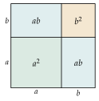
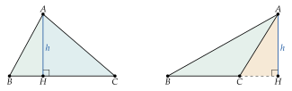
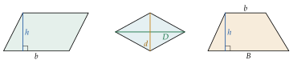
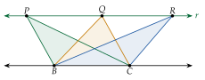
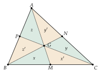
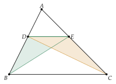
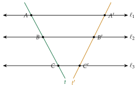

Medir una región del plano es asignarle un número que diga “cuánto plano ocupa”. Igual que hicimos con la distancia y la medida de ángulos, no definiremos el área a partir de cosas más simples: la introducimos con un postulado que recoge sus propiedades básicas, y de él deducimos todas las fórmulas que conocemos desde el colegio. El capítulo termina con resultados menos conocidos pero muy útiles, sobre razones de áreas de triángulos y sobre las medianas.
Una región triangular es la unión de un triángulo y su interior. Una región poligonal es una unión finita de regiones triangulares tales que dos cualesquiera de ellas se cortan, a lo sumo, en un lado o en un vértice común. Para no complicar el lenguaje, cuando hablemos del “área de un triángulo” o “de un polígono” nos referiremos al área de la región correspondiente.
A cada región poligonal R le corresponde un único número real positivo A(R), su área, de modo que:
Congruencia. Si dos triángulos son congruentes, sus regiones tienen la misma área.
Aditividad. Si R=R1∪R2, donde R1 y R2 son regiones poligonales que se cortan a lo sumo en segmentos y puntos, entonces A(R)=A(R1)+A(R2).
Unidad. El área de una región cuadrada de lado a es a2.
El axioma A3 fija la unidad de medida: un cuadrado de lado 1 tiene área 1. Observe que de A1 y A2 se sigue que figuras que se descomponen en piezas congruentes tienen la misma área; este es el principio que usaremos una y otra vez.
El área de un rectángulo de lados a y b es ab.
Construimos un cuadrado de lado a+b y lo dividimos, como en la figura, en un cuadrado de lado a, un cuadrado de lado b y dos rectángulos de lados a y b.
Los dos rectángulos son congruentes (cada uno se divide por una diagonal en dos triángulos congruentes con los del otro, por L-A-L), así que tienen la misma área R.

Por A2 y A3, (a+b)2=a2+b2+2R. Desarrollando, a2+2ab+b2=a2+b2+2R, de donde R=ab.
El área de un triángulo rectángulo es la mitad del producto de sus catetos.
Un triángulo rectángulo de catetos a y b es la mitad de un rectángulo de lados a y b, partido por una diagonal en dos triángulos congruentes (L-A-L). Por A1 y A2, cada uno tiene área 2ab.
En un triángulo, cualquier lado puede tomarse como base; la altura correspondiente es la distancia del vértice opuesto a la recta que contiene a la base. En un paralelogramo, la altura correspondiente a una base es la distancia entre la recta de esa base y la del lado opuesto (que es constante por el Teorema 3.7.3).
El área de un triángulo es la mitad del producto de una base por su altura correspondiente: A=2bh.
Sea △ABC con base BC y sea H el pie de la altura desde A, h=AH. Hay tres casos, según dónde caiga H.
H coincide con B o con C. El triángulo es rectángulo y es el corolario anterior.

H está entre B y C. La altura divide al triángulo en dos triángulos rectángulos, y A=2BH⋅h+2HC⋅h=2(BH+HC)h=2BC⋅h.
H está fuera de BC, digamos B−C−H. Ahora △ABH es la unión de △ABC y △ACH, así que A(△ABC)=2BH⋅h−2CH⋅h=2(BH−CH)h=2BC⋅h.
En un triángulo, el producto de un lado por su altura correspondiente no depende del lado elegido: aha=bhb=chc=2A. En particular, al lado mayor le corresponde la altura menor.
El área de un paralelogramo es el producto de una base por su altura: A=bh.
El área de un rombo es la mitad del producto de sus diagonales: A=2Dd. Más en general, esto vale para cualquier cuadrilátero convexo con diagonales perpendiculares.
El área de un trapecio de bases B y b y altura h es A=2(B+b)h, es decir, la base media por la altura.
(i) Una diagonal divide al paralelogramo en dos triángulos congruentes, cada uno con base b y altura h; el área es 2⋅2bh=bh.
(ii) Si las diagonales AC y BD de un cuadrilátero convexo ABCD son perpendiculares, AC lo divide en los triángulos △ABC y △ACD, de base común AC y alturas h1 y h2 con h1+h2=BD (las alturas están sobre la recta BD). Así A=2AC⋅h1+2AC⋅h2=2AC⋅BD.
(iii) La diagonal AC divide el trapecio ABCD (AB∥CD) en △ABC, de base B=AB, y △ACD, de base b=CD, ambos con altura h (la distancia entre las bases). Sumando, 2Bh+2bh=2(B+b)h. Por el Teorema 4.6.4, 2B+b es la base media.
Arrastre el vértice superior y cambie la base: el área solo depende de la base y la altura.

El área de un polígono regular es la mitad del producto de su perímetro por su apotema: A=2pa.
Uniendo el centro con los n vértices, el polígono queda dividido en n triángulos congruentes (Teorema 4.5.1), cada uno con base igual al lado ℓ y altura igual a la apotema a. Luego A=n⋅2ℓa=2(nℓ)a=2pa.
Halle el área de un hexágono regular de lado 6.
El ángulo central mide 60∘ y los triángulos △OPiPi+1 son isósceles con ángulo en el vértice de 60∘; luego son equiláteros y el radio también mide 6. La apotema es la altura de un triángulo equilátero de lado 6: por el teorema de Pitágoras, a=36−9=33. Así A=236⋅33=543.
La fórmula A=2bh tiene consecuencias que no son fórmulas sino herramientas de demostración. Las usaremos para probar el teorema de Thales en el capítulo siguiente.
Si dos triángulos tienen alturas iguales, la razón de sus áreas es igual a la razón de las bases correspondientes. Si tienen bases iguales, la razón de sus áreas es la razón de las alturas.
A2A1=b2h/2b1h/2=b2b1, y análogamente con las alturas.
Si D es un punto del lado BC de △ABC, entonces A(△ADC)A(△ABD)=DCBD. En particular, una mediana divide al triángulo en dos triángulos de igual área.
Los triángulos △ABD y △ADC tienen la misma altura: la distancia de A a la recta BC.
Si P y Q están en una recta paralela a BC, entonces A(△PBC)=A(△QBC).
Deslice C por la recta paralela a AB. Todos esos triángulos tienen la misma área.

Sea ABCD un trapecio con bases AB y CD, y sea O el punto de corte de sus diagonales. Pruebe que A(△AOD)=A(△BOC).
Por el corolario, A(△ABD)=A(△ABC), porque D y C están en una paralela a AB. Restando a ambos el área de △AOB (aditividad): A(△AOD)=A(△ABD)−A(△AOB)=A(△ABC)−A(△AOB)=A(△BOC).
Las tres medianas de un triángulo lo dividen en seis triángulos de igual área. En particular, si G es el baricentro, A(△GBC)=A(△GCA)=A(△GAB)=31A(△ABC).
Sean M, N, P los puntos medios de BC, CA, AB, y llamemos x,x′ a las áreas de △GBM, △GMC; y,y′ a las de △GCN, △GNA; z,z′ a las de △GAP, △GPB.
Como GM es mediana de △GBC, x=x′; del mismo modo y=y′ y z=z′.
Además, AM es mediana de △ABC, así que A(△ABM)=A(△AMC), es decir, 2z+x=2y+x, de donde z=y.
Del mismo modo, con la mediana BN, A(△BCN)=A(△BNA) se escribe 2x+y=2z+y, de donde x=z.
Luego las seis áreas son iguales.
Arrastre los vértices: las tres medianas siempre dividen el triángulo en seis triángulos de igual área.

Sea △ABC y P un punto de su interior. Entonces P está en la mediana desde A si y solo si A(△PAB)=A(△PAC).
(⇒) Sea M el punto medio de BC y P∈AM. Por el Corolario 5.3.2, A(△ABM)=A(△ACM) y A(△PBM)=A(△PCM). Restando, A(△PAB)=A(△PAC).
(⇐) Sea A(△PAB)=A(△PAC) y sea D el punto donde AP corta a BC (barra transversal). Los triángulos △PAB y △PAC tienen la base común AP, así que sus alturas desde B y C a AD son iguales: BE=CF, con E, F los pies. Los triángulos rectángulos △BED y △CFD tienen BE=CF y ángulos opuestos por el vértice en D; por L-A-A son congruentes, y BD=DC. Así D=M y P∈AM.
El teorema anterior da otra prueba de que las medianas concurren: si G es el corte de las medianas desde B y C, entonces A(△GBA)=A(△GBC) y A(△GCA)=A(△GCB), luego A(△GAB)=A(△GAC) y G está en la mediana desde A.
Dos figuras son congruentes cuando una es una copia exacta de la otra; son semejantes cuando una es una copia a escala de la otra: la misma forma, posiblemente otro tamaño. La semejanza es una de las ideas más fecundas de la geometría. Con ella probaremos el teorema de Pitágoras, la fórmula de Herón y la ley del paralelogramo, y es la base de la trigonometría. La pieza clave es el teorema de Thales, que demostraremos usando áreas.
La razón entre dos números a y b, con b=0, es el cociente ba. Una proporción es una igualdad entre dos razones, ba=dc; los números a y d son los extremos y b y c los medios. Si ba=cb, el número b es la media proporcional (o media geométrica) entre a y c.
Sean a,b,c,d números reales no nulos con ba=dc. Entonces:
(Propiedad fundamental) ad=bc;
(Alternar e invertir) ca=db y ab=cd;
(Componer y descomponer) ba+b=dc+d y ba−b=dc−d;
(Suma de antecedentes y consecuentes) si b+d=0, ba=dc=b+da+c.
(i) Multiplicando por bd. (ii) Dividiendo ad=bc por cd o por ac. (iii) Sumando o restando 1 a ambos lados: ba±1=dc±1. (iv) Sea k=ba=dc; entonces a=kb, c=kd y a+c=k(b+d).
Los segmentos AB,CD son proporcionales a EF,GH si CDAB=GHEF. Un punto P de AB divide al segmento en la razón r si PBAP=r.
Si una recta paralela a un lado de un triángulo corta a los otros dos lados en puntos distintos de los vértices, entonces los divide en segmentos proporcionales: si en △ABC los puntos D∈AB, E∈AC cumplen DE∥BC, entonces DBAD=ECAEyABAD=ACAE.
Trazamos los segmentos DC y EB.

Los triángulos △ADE y △DBE tienen la misma altura desde E (la distancia de E a AB), así que por el Teorema 5.3.1 A(△DBE)A(△ADE)=DBAD. Del mismo modo, △ADE y △EDC tienen la misma altura desde D: A(△EDC)A(△ADE)=ECAE. Pero △DBE y △EDC tienen la base común DE y sus vértices B y C están en una paralela a DE, así que tienen la misma área (Corolario 5.3.3).
Los lados derechos son entonces iguales: DBAD=ECAE.
La segunda proporción sale de la primera componiendo: ADDB=AEEC implica ADAD+DB=AEAE+EC, es decir, ADAB=AEAC.
Si en △ABC los puntos D∈AB y E∈AC, distintos de los vértices, cumplen DBAD=ECAE, entonces DE∥BC.
Sea r la paralela a BC por D. Por el postulado de Pasch, r corta a AC (no puede cortar a BC, que le es paralelo) en un punto E′, y por el teorema de Thales DBAD=E′CAE′. Entonces E′CAE′=ECAE, y componiendo, E′CAC=ECAC, de donde E′C=EC. Como E y E′ están en AC, E=E′, y DE=r∥BC.
Si tres o más rectas paralelas cortan a dos transversales, los segmentos determinados en una de ellas son proporcionales a los segmentos correspondientes en la otra: si ℓ1∥ℓ2∥ℓ3 cortan a t en A, B, C y a t′ en A′, B′, C′, entonces BCAB=B′C′A′B′.
Si t∥t′, los cuadriláteros que se forman son paralelogramos y AB=A′B′, BC=B′C′.
Si no, trazamos por A la paralela a t′, que corta a ℓ2 y ℓ3 en B′′ y C′′.
Los cuadriláteros AB′′B′A′ y B′′C′′C′B′ son paralelogramos, así que AB′′=A′B′ y B′′C′′=B′C′.
En el triángulo △ACC′′, la recta ℓ2 es paralela a CC′′, y por Thales BCAB=B′′C′′AB′′=B′C′A′B′.
Mueva los puntos. Las razones entre los segmentos determinados sobre las dos rectas coinciden.

El teorema de Thales permite dividir un segmento AB en n partes iguales con regla y compás: se traza un rayo cualquiera AX, se marcan sobre él n segmentos consecutivos congruentes AP1,P1P2,…,Pn−1Pn, se une Pn con B y se trazan paralelas a PnB por los demás Pi. Esas paralelas cortan a AB en los puntos de división.
Próxima semana: Semejanza y Pitágoras